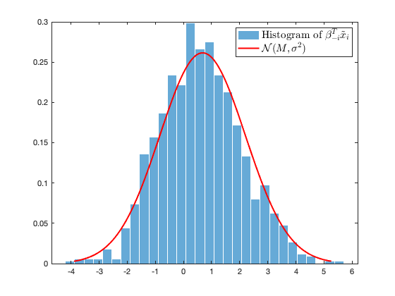
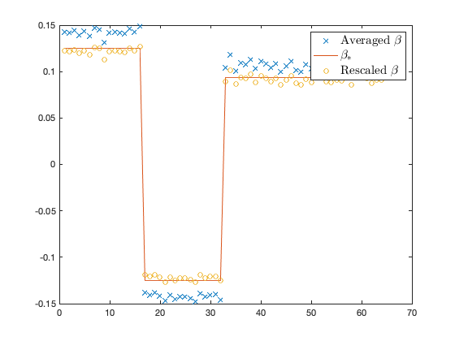

Section 6.1: Generalized linear classifier
This page contains simulations in Section 6.1.
Contents
Histogram of  versus the limiting Gaussian behavior
versus the limiting Gaussian behavior
close all; clear; clc coeff = 1; p = 256*coeff; n = 1024*coeff; loss_type = 'logistic'; % amomg 'quadraic', 'logistic' and 'exp' gamma = 0.1; % regularization switch loss_type case 'quadraic' L = @(t) (t-1).^2; Lp = @(t) 2*(t-1); Lpp = @(t) 2; case 'logistic' L = @(t) log(1+exp(-t)); Lp = @(t) -1./(1+exp(t)); Lpp = @(t) exp(t)./((1+exp(t)).^2); case 'exp' L = @(t) exp(-t); Lp = @(t) -exp(-t); Lpp = @(t) exp(-t); end mu = ones(p,1)/sqrt(p); C = diag([ones(p/4,1);3*ones(p/4,1);5*ones(p/2,1)]); eigs_C = diag(C); X = mu*ones(1,n) + sqrtm(C)*randn(p,n); beta0 = randn(p,1)/sqrt(p); % random initialization of grandient descent to solve ERM step = 1e-3; beta_opt = grad_descent( @(beta)f(beta,X,gamma,loss_type), beta0, step, 'no'); estim_delta = 1; tmp_delta = 0; while abs(estim_delta - tmp_delta) > 1e-6 tmp_delta = estim_delta; tmp = mean(Lpp(beta_opt'*X)./(1+estim_delta*Lpp(beta_opt'*X))); estim_delta = sum( eigs_C./( tmp*eigs_C+gamma) )/n; end r = beta_opt'*X + estim_delta*Lp(beta_opt'*X); estim_M = mean(r); estim_sigma2 = var(r); % Using empirical estimation as initialization of fixed-point equations param = [estim_M,sqrt(estim_sigma2),estim_delta]; %param(1)=M, param(2)=sqrt(sigma2), param(3)=delta; param_tmp = [0,0,0]; nb_average = 500; z = randn(nb_average,1); while min(abs(param - param_tmp)) > 1e-6 param_tmp = param; M = param(1); sigma = param(2); delta = param(3); r = M+sigma*z; prox_r0 = randn(size(r)); options = optimset('Display','off'); find_prox_r = @(x)delta*Lp(x)+x-r; prox_r = fsolve(find_prox_r, prox_r0, options); % numerically find the prox f_r = -Lp(prox_r); %f_r = (prox_r-r)/delta; tmp_delta = 0;% fixed-point iteration to determine delta while abs(delta - tmp_delta) > 1e-5 tmp_delta = delta; tmp = mean(Lpp(prox_r)./(1+delta*Lpp(prox_r))); delta = sum( eigs_C./( tmp*eigs_C+gamma) )/n; end E_f_p = -mean(f_r.*z)/sigma; E_f = mean(f_r); E_f2 = mean(f_r.^2); inv_shortcut = (E_f_p*C+gamma*eye(p))\mu; M = E_f*mu'*inv_shortcut; sigma2 = E_f^2*inv_shortcut'*C*inv_shortcut + E_f2*norm((E_f_p*C+gamma*eye(p))\C,'fro')^2/n; param = [M,sqrt(sigma2),delta]; end % compare to leave-one-out empirical results store_r = zeros(n,1); for i=1:n xi = X(:,i); X_i = X(:,[1:i-1,i+1:end]); beta0 = randn(p,1)/sqrt(p); step = 1e-3; beta_i = grad_descent( @(beta)f(beta,X_i,gamma,loss_type), beta0, step, 'no'); store_r(i) = beta_i'*xi; end xs = linspace(M-3*sigma,M+3*sigma,100); figure histogram(store_r,30,'Normalization','pdf','EdgeColor', 'white'); hold on plot(xs,normpdf(xs,M,sigma), 'r', 'Linewidth',2) legend('Histogram of $\beta_{-i}^T \tilde x_i$', '$\mathcal N(M, \sigma^2)$','Interpreter','latex', 'FontSize', 15);
Comparison of expectation of  to the optimal Bayes solution
to the optimal Bayes solution
close all; clear; clc coeff = 1; p = 64*coeff; n = 512*coeff; loss_type = 'logistic'; % amomg 'quadraic', 'logistic' and 'exp' gamma = 0; % unregularized case! switch loss_type case 'quadraic' L = @(t) (t-1).^2; Lp = @(t) 2*(t-1); Lpp = @(t) 2; case 'logistic' L = @(t) log(1+exp(-t)); Lp = @(t) -1./(1+exp(t)); Lpp = @(t) exp(t)./((1+exp(t)).^2); case 'exp' L = @(t) exp(-t); Lp = @(t) -exp(-t); Lpp = @(t) exp(-t); end mu = [ones(p/4,1);-ones(p/4,1);ones(p/2,1)*3/4]/sqrt(p); C = diag(2*ones(p,1)); eigs_C = diag(C); X = mu*ones(1,n) + sqrtm(C)*randn(p,n); beta0 = randn(p,1)/sqrt(p); step = 1e-3; beta_opt = grad_descent( @(beta)f(beta,X,gamma,loss_type), beta0, step, 'no'); beta_store = zeros(p,1); rescale_beta_store = zeros(p,1); nb_average = 500; for i = 1:nb_average X = mu*ones(1,n) + sqrtm(C)*randn(p,n); beta0 = randn(p,1)/sqrt(p); step = 1e-3; beta_opt = grad_descent( @(beta)f(beta,X,gamma,loss_type), beta0, step, 'no'); estim_delta = 1; tmp_delta = 0; while abs(estim_delta - tmp_delta) > 1e-6 tmp_delta = estim_delta; estim_delta = p/n/mean(Lpp(beta_opt'*X)./(1+estim_delta*Lpp(beta_opt'*X))); end r = beta_opt'*X + estim_delta*Lp(beta_opt'*X); estim_E_f = mean(-Lp(beta_opt'*X)); estim_E_f_p = mean(Lp(beta_opt'*X).*(r - mean(r))./var(r)); beta_store = beta_store + beta_opt/nb_average; rescale_beta_store = rescale_beta_store + 2*estim_E_f_p/estim_E_f*beta_opt/nb_average; end figure plot(beta_store,'x') hold on beta_star = C\mu*2; plot(beta_star); plot(rescale_beta_store,'o'); legend('Averaged $\beta$', '$\beta_*$', 'Rescaled $\beta$' ,'Interpreter','latex', 'FontSize', 15) % FUNCTIONS function [loss,grad] = f(beta,X,gamma,loss_type) switch loss_type case 'quadraic' L = @(t) (t-1).^2; Lp = @(t) 2*(t-1); case 'logistic' L = @(t) log(1+exp(-t)); Lp = @(t) -1./(1+exp(t)); case 'exp' L = @(t) exp(-t); Lp = @(t) -exp(-t); case 'hinge' L = @(t) max(0,1-t); Lp = @(t) double(-1*(t<=0)+0*(t>0)); end n = size(X,2); loss = sum(L(beta'*X))/n + gamma*norm(beta)^2/2; grad = X*Lp(X'*beta)/n + gamma*beta; end function [beta_opt, f_opt] = grad_descent(f, beta0, step, plot_loss) Tol = 1e-5; % tolerance MaxIter = 50000; % maximum number of iterations Dxmin = 1e-5; %minimum allowed perturbation gnorm = inf; beta = beta0; nIter = 0; d_beta = inf; % gradient descent algorithm: while and(gnorm>=Tol, and(nIter <= MaxIter, d_beta >= Dxmin)) [loss,g] = f(beta); gnorm = norm(g); beta_new = beta - step*g; % check step if ~isfinite(beta_new) display(['Number of iterations: ' num2str(nIter)]) error('beta is inf or NaN') end % update termination metrics nIter = nIter + 1; d_beta = norm(beta_new-beta); beta = beta_new; switch plot_loss case 'yes' if mod(nIter,500)==0 fprintf('Iteration %4i | Cost: %4.6e\r', nIter, loss); end end end beta_opt = beta; f_opt = f(beta_opt); end